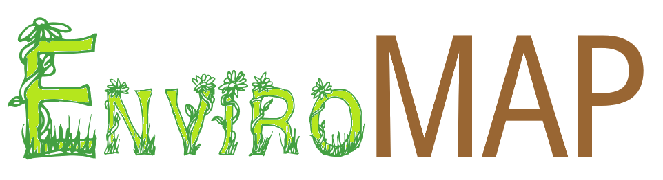
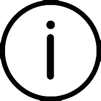
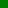
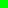
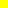
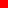

You need to enable JavaScript to run this app.


Nitrate Concentration Map
Sample Year:
1995
1996
1997
1998
1999
2000
2001
2002
2003
2004
2005
2006
2007
2008
2009
2010
2011
2012
2013
2014
2015
2016
2017
2018
Low Concentration     High Concentration
Sample Location:
Select a point...
Nitrate Concentration (mg/l):
Select a point...
For context, the maximum allowed in bottled water is 10 mg/L.